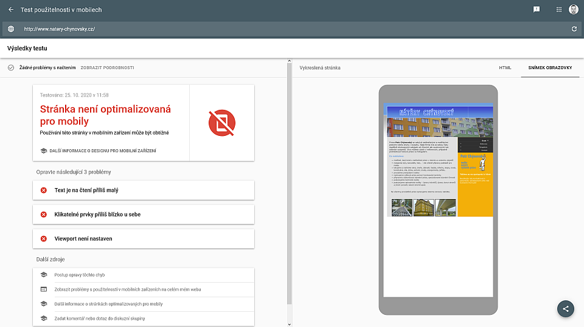
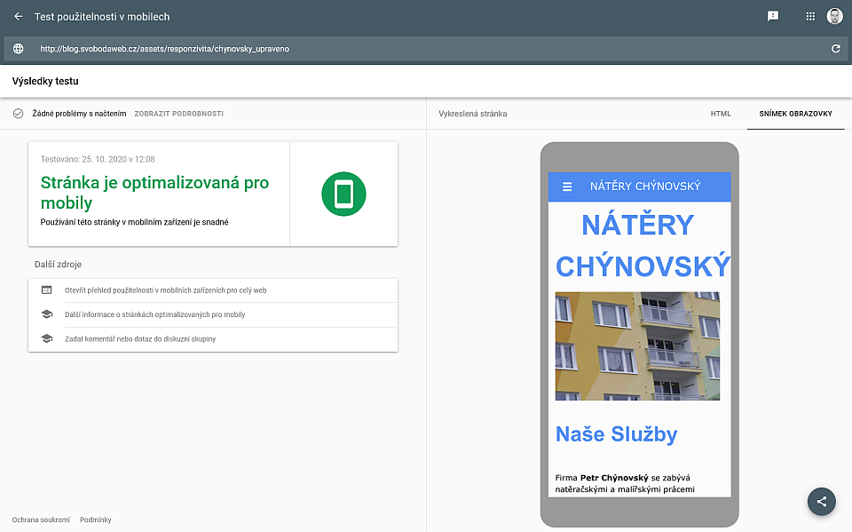

Pojem responzivita vychází ze slova response (odpověď, reakce). Je to schopnost přizpůsobit se a nejednat neustále jedním způsobem.
Protože na ně uživatel může nahlížet z širokoúhlé televize nebo velkého monitoru stejně tak jako z mobilu drženého na výšku.
Pokud vaše stránky nejsou responzivní, odrazujete tím uživatele, pro jejichž zařízení není web nastaven. Budou mít problémy se čtením obsahu a ovládání webu tlačítky atd.
Ale především budete mít horší výsledky na vyhledávačích (Google atd.), protože nesprávně nastavené weby mají postih (snížené skóre). Potenciální zákazníci se tedy mnohem pravděpodobněji dostanou na web vaší konkurence.
Nedostatečné nastavení se může projevit následovně:
Takto např. vypadá náhled nedostatečně nastaveného webu:
Výsledek testu jasně ukazuje neúspěšný výsledek testu responzivity.
Zde je výsledek z testu rychlosti načtení:
83% a 0.8s. Ohodnoceno indexem B. Není to špatné, ale mohlo by to být lepší.
Web v ukázce můžete vidět zde
Základní responzitiva by měla zahrnovat optimalizaci zobrazení stránek podle šířky obrazovky zařízení uživatele. A nastavit dobré zobrazení a čitelnost alespoň pro 3 základní typy zařízení - malé (mobilní telefon), střední (tablet, notebook) a velké (kancelářský monitor).
Po úpravách web bez problémů v testu responzitivity uspěl:
Test rychlosti také dopadl lépe:
94%, index hodnocení A, rychlost načtení 0.4s. Velmi dobrý výsledek.
Upravený web s modernějším responzivním designem můžete vidět zde